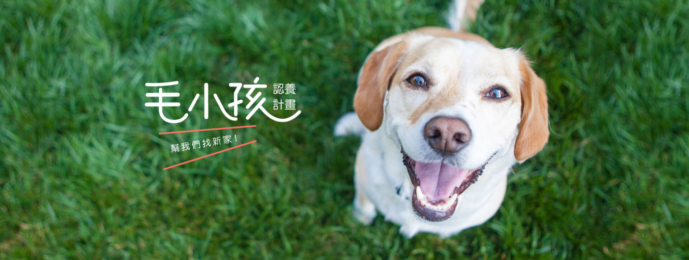

 ×
×
關於我們

-
從養狗狗那一天開始，才漸漸地關注到路上無家可歸的浪犬、浪貓，每日的溫飽何來？滂沱大雨、寒流來襲時往何處去？心想著，對比家裡那隻幸福的毛寶貝，浪浪們的處境讓人更往心裡去。行有餘力，相信每個愛毛孩的人都希望有機會為浪浪做點什麼吧…。那可以是什麼樣的實質作為，或者是什麼樣的友善幫助呢？
-
總想著乾脆把浪浪帶回家養吧，大不了多雙碗筷而已，但面對現實處境，往往不是每個人都能負起照顧毛孩一輩子的能力，於是，許多人開始學著掩蔽對牠們的關愛，對惹人憐的浪浪視而不見，這也是為何每每看到浪浪時，總會心生一種不捨和無力感，但似乎又只能收起對浪浪的愛，把那份愛轉而給家裡的毛寶貝。
流浪動物的收容問題，一直是被大家所關注的議題，浪浪們不是流浪街頭，就是送往收容所或是被棄養在流浪園區，事實上，給浪犬、浪貓找到一個家的幫助並不顯著，猶如擱淺於海灣之中，牠們從不敢奢望那裡是個能待一輩子的避風港。
我們全心地愛著自己的狗狗，同樣也想分享愛給浪浪，但實踐「以領養代替購買」的理想，對於前期的飼養和照護，再到完成認養等等過程，所需的人力和金錢不知從何而來，而完成認養後期的關懷和追蹤又該如何執行？
-
實現這個理想的每一個環節，需要擁有各種有形、無形等後援和支持，更需要一群堅強的團隊堅持去做！
-
不過，大家知道嗎？儘管現實環境的狀況不如預期，對於給浪浪們一個家，我們另外還能做的事，就是帶著浪浪去中繼的居所，那是叫作「中途之家」的地方。一個很溫暖、載滿愛的暫時居所，由少數人或一群人幫忙照顧浪浪們的生活起居，任何喜歡狗狗貓貓的人，都可以近距離與浪浪們互動、擁抱，並且透過這樣的方式喚起人們對認養的意願。
-
「中途之家」顧名思義，是給所有流浪毛孩所規設出的空間，並作為一個尋到溫暖家之前的中繼站，讓無依無靠的浪犬、浪貓可不必在街上討苦頭，也能避免淪於收容所的處境。

所有付出時間、金錢和一己之力的中途爸媽，為浪浪打造了一個開放式空間，將牠們照顧得親人又漂亮，也訓練牠們簡單的規矩，讓每個到這裡會見浪浪的未來爸媽們，對牠們有更多地傾愛，進而牽起領養浪浪的引繩。
大部分的中途爸媽都是利用自己額外的時間來照顧浪浪們，付出自己工作所賺的收入支撐中途之家，並藉由這樣的途徑來幫助流浪動物，對他們來說，回饋在身上的滿足感，就是實踐了給浪浪找到家的心願。

-
另一種中途之家的途徑，是集結一群愛犬愛貓的毛父母們，僅透過金錢資助的形式，讓浪浪安養在所謂的流浪園區。經常會有人撿到浪浪後，會利用這個途徑把牠們安置在園區內。
-
中途資助者不需花時間、心力或者買下一塊地來照顧毛孩們，畢竟許多人的現實狀況並不允許，因此，便透過這樣的中途園區給浪浪們一個共同的家。
-
不過，這種方式往往會出現一個問題，那就是資助者會突然閃人不見，而園區不捨把浪浪丟回街頭，長期下來，便寄養了越來越多的流浪動物，不只使中途之家無法支撐下去，也讓「狗狗找到一個家」的理想淪於一場夢。
本站刊登之部分內容取自
- 台灣動物緊急救援小組
https://www.savedogs.org/index.php - 浪喵糧食
https://fooddog999.waca.tw/product/all - 張媽媽流浪動物之家
https://www.ntpsa.org.tw/home
- 地址:100台北市中正區濟南路一段321號
- 信箱:notfindme@gmail.com
- 電話:(02)2873-6666
- 平日08:00~21:00
假日06:00~22:00


本網站為緯育TibaMe前端工程師班THD101
學員專題作品，本平台僅供學習、展示之用